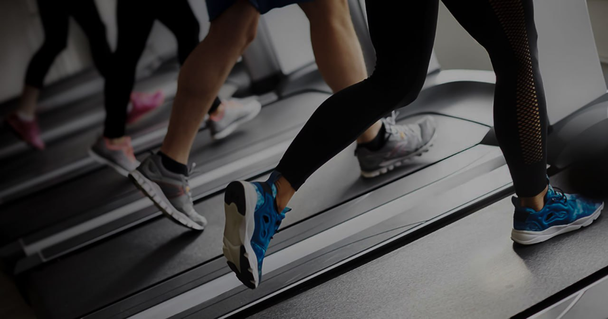

У сучасному світі, коли ритм життя завдає нам викликів, а доступ до
тренажерних залів може бути обмеженим, фітнес удома стає ключем до
підтримки фізичного здоров'я та добробуту. І найкраще в цьому — те, що для
ефективних тренувань вам не потрібне складне або дороге обладнання. Прості,
але ефективні вправи можуть змінити ваш погляд на фізичну активність.

Вправи для загальної розминки:
Починайте тренування з розминки, щоб розігріти м'язи і підготувати тіло до
фізичного навантаження. Кругова розминка з присідань, розтяжок рук та ніг,
обертання корпусу — це відмінний старт для будь-якого тренування.
Присідання та викиди:
Прості, але ефективні вправи для м'язів стегон та сідниць. Присідання
допомагають зміцнити нижню частину тіла, а викиди сприяють роботі сідничних
м'язів.
Вправи для пресу:
Спробуйте різні варіації планок, ваших найкращих друзів для утримання пресу в
тонусі. Планка з обопільним підніманням рук та ніг чудово розробляє різні
частини пресу
Вправи для верхніх кінцівок:
За допомогою простих вправ, таких як підйом та опускання тіла від лавки або
стільця, ви можете зміцнити м'язи рук, плечей та спини. Додайте в це
віджимання від підлоги для ефективної роботи над грудними м'язами.
Кардіо вправи:
Прискорте своє серце і покращте кардіореспіраторну витривалість, роблячи
вправи, які вимагають інтенсивного руху, такі як біг на місці, стрибки або
аеробічні рухи.
Фітнес удома доводить, що для ефективного тренування вам не обов'язково
потрібне велике кількість обладнання чи тренажерів. Прості вправи можуть
принести значущі результати, допомагаючи зберегти ваше тіло в тонусі, підняти
настрій та підтримати загальне фізичне здоров'я.
Хвастик Тетяна